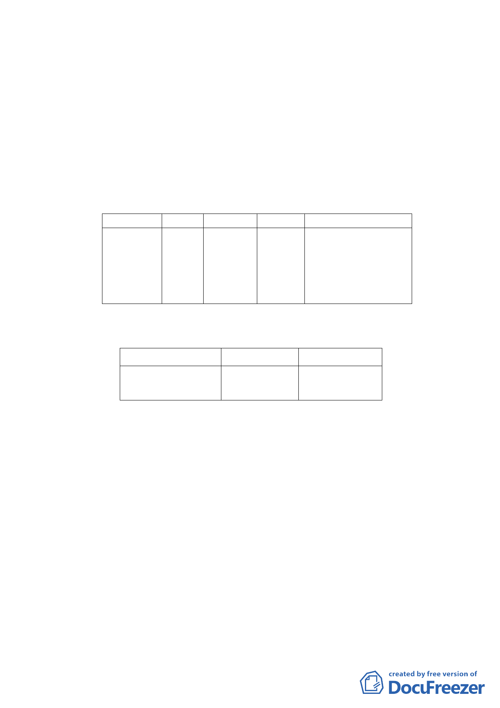

蔽率45％，容積率225％。
（二） 土地使用現況
計畫區內為5棟4層樓之建築物，其使用年期均逾30
年，土地權屬私有佔99.34％，公有（國有）土地面積20
㎡、佔0.66％。
四、 變更細部計畫內容：
（一）變更土地使用分區
位置
原計畫 新計畫
南港區向陽 第三種 第三種住
路120巷2弄 住宅區 宅區(特)
及興南街所
圍之西北側
街廓
面積（㎡）
變更理由
3,016 配合「修訂臺北市老舊
中低層建築社區辦理都
市更新擴大協助專案計
畫」變更原計畫內容。
（二）土地使用分區管制
1.使用強度
使用分區
原計畫
第三種住宅區（特） 建蔽率45%
容積率225%
新計畫
建蔽率45%
容積率225%
2.使用管制
本計畫使用項目比照臺北市土地使用分區管制自治
條例第三種住宅區之使用組別。
3.本計畫區得適用100年9月20日公告之「修訂臺北市老舊
中低層建築社區辦理都市更新擴大協助專案計畫」之
容積獎勵。本計畫區總容積上限不得超過建築基地2倍
法定容積。
4.本計畫區獎勵容積核給額度，依本市都市設計及土地使
用開發許可審議委員會及都市更新及爭議處理審議會
審議結果辦理。
五、 全案係市府101年3月5日府都規字第10130092800號公告公
-3-